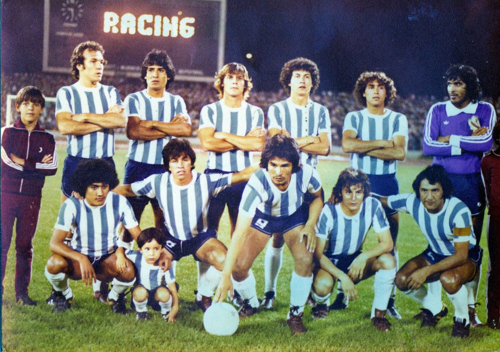

El Racing Cordobés
Más de un siglo de aguante y sentimiento.

Nuestra Historia
Fundado el 14 de diciembre de 1924 en el corazón de Nueva Italia, el Club Atlético Racing nació de la pasión de un grupo de trabajadores de barrio Pueyrredón, decididos a marcar la historia del deporte de nuestra provincia. Con los colores celeste y blanco grabados en el pecho, la Academia se convirtió rápidamente en un pilar fundamental del fútbol cordobés, siendo el primer club en conseguir su plaza en AFA y el primer campeón internacional del interior del país.
A lo largo de las décadas, nuestras tribunas han sido testigos de hazañas memorables, como el triple ascenso en 1999, grandes planteles que dejaron huella a nivel nacional, como aquel subcampeon de 1980 ante Rosario Central y una identidad inquebrantable que se transmite de generación en generación. Racing no es solo un club de fútbol; es una gran familia, una escuela de vida y el orgullo eterno de su gente que cada día lo hace mas grande.